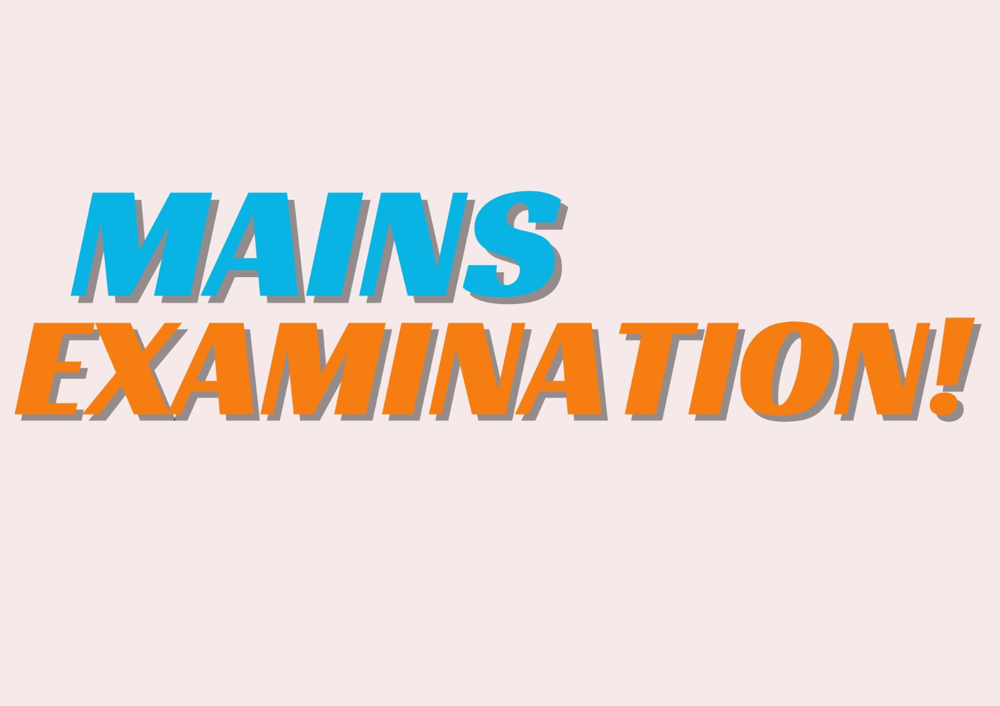

The Mains examination consists of nine papers, out of which seven are compulsory and two are
optional.
Compulsory Papers:
Compulsory Papers:
- Paper-I: Essay (250 marks)
- Paper-II: General Studies-I (Indian Heritage and Culture, History, and Geography of the World and Society) (250 marks)
- Paper-III: General Studies-II (Governance, Constitution, Polity, Social Justice, and International relations) (250 marks)
- Paper-IV: General Studies-III (Technology, Economic Development, Bio-diversity, Environment, Security and Disaster Management) (250 marks)
- Paper-V: General Studies-IV (Ethics, Integrity, and Aptitude) (250 marks)
- Paper-VI: Optional Subject - Paper I (250 marks)
- Paper-VII: Optional Subject - Paper II (250 marks)
Optional Subjects:
Candidates can choose one optional subject from a list of given subjects.
The UPSC offers a wide range of optional subjects for candidates to choose from for the Mains examination. As of cutoff in January 2022, here is a list of optional subjects along with their syllabus. Please note that the syllabus may be subject to periodic revisions by the UPSC, so it's advisable to check the latest notification or the official UPSC website for any updates.
The UPSC offers a wide range of optional subjects for candidates to choose from for the Mains examination. As of cutoff in January 2022, here is a list of optional subjects along with their syllabus. Please note that the syllabus may be subject to periodic revisions by the UPSC, so it's advisable to check the latest notification or the official UPSC website for any updates.
| S.no | Optional | paper1 | paper2 |
|---|---|---|---|
| 1 | Agriculture | Principles and Practices of Crop Production and Management, Agricultural and Animal Husbandry Practices, Plant Breeding and Genetics, etc. | Farm Management, Agro-industries, and Marketing, Agricultural Extension, Ecological and Environmental issues in Agriculture, etc. |
| 2 | Animal Husbandry and Veterinary Science | Animal Nutrition, Animal Physiology, Livestock Production and Management, etc. | Veterinary Science, Animal Diseases, Public Health, Zoonoses, etc. |
| 3 | Anthropology | Introduction to Anthropology, Evolution of Man, Social Structure, Biological Diversity, etc. | Indian Society, Tribal India, Demographic Structure, Social Change in India, etc. |
| 4 | Botany | Microbial Diversity, Cryptogams, Angiosperms, Plant Utility, etc. | Cell Biology, Genetics, Plant Breeding, Economic Botany, etc. |
| 5 | Chemistry | Atomic Structure, Chemical Bonding, Coordination Compounds, Organic Chemistry, etc. | Thermodynamics, Bioinorganic Chemistry, Organic Synthesis, Spectroscopy, etc. |
| 6 | Civil Engineering | Building Materials, Solid Mechanics, Structural Analysis, etc. | Design of Steel Structures, Environmental Engineering, Surveying, etc. |
| 7 | Commerce and Accountancy | Financial Accounting, Business Organization, Business Laws, etc. | Cost and Management Accounting, Auditing, Economics and Governance, etc. |
| 8 | Economics | Microeconomics, Indian Economic Development, International Economics, etc. | Macroeconomics, Environmental Economics, Money and Banking, etc. |
| 9 | Geography | Principles of Geographical Thought, Physical Geography, Human Geography, etc. | Regional Planning, Social and Economic Geography, Geography of India, etc |